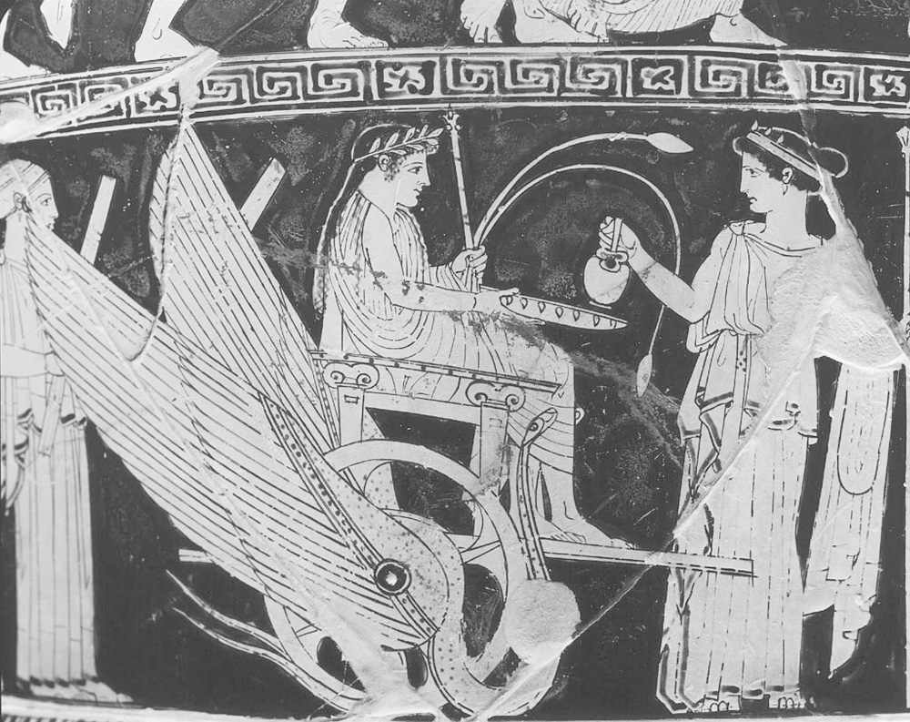
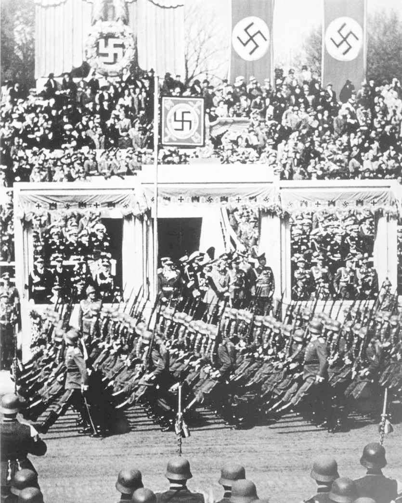
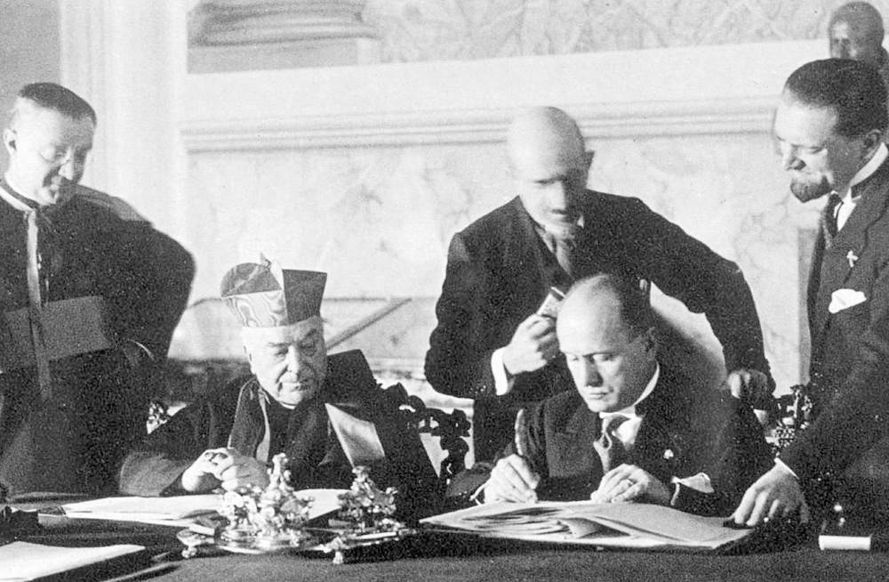

这一章的主题不是要写无神论的断代史，有两个理由。第一，它内容太多，短短的一章无法容纳，且我自己不是历史学家，无法胜任。第二个原因与本书主旨有关。我主要想提供无神论是一种正确思想的原因，反驳那些反证无神论的论据，而不是讨论所有与无神论有关的事情。
所以，我对无神论历史的兴趣就只限于两个具体问题，我觉得论述无神论时，对这两个问题的回答可以构成宽泛的论据。第一个问题是，无神论是什么时候，由于什么原因在西方历史中出现的。第二个问题是，无神论在多大程度上牵连进了20世纪苏联、纳粹德国、意大利和西班牙恐怖的极权主义。对第一个问题的解答有助于加强无神论的论证，而对第二个问题的解答可以削弱反对无神论的声音。
无神论何时开始？这个问题有两个答案，它们看起来相互矛盾。一个是无神论与西方文明一样始于古希腊。詹姆斯·思罗尔在其《西方无神论》一书中论证了这个观点。另一个看法是无神论是在18世纪才完全出现的。这是戴维·伯曼在其《英国无神论史》一书中提出的观点。然而，这两个观点的矛盾只是表面性的，因为有一个解释可以把思罗尔和伯曼的说法统一起来。这就是，无神论起源于古希腊，但它作为一种显明的、公开宣扬的思想体系直到启蒙时期才出现。
思罗尔论点的基础是自然主义与无神论必然具有联系。我们在第一章中看到，无神论不能被简单地看作对宗教的否定，相反，如果认为无神论所持的观点是只存在一个世界，而这个世界就是自然世界，那么无神论本身就是一个自足的思想体系。
如果这样理解无神论是正确的，而我与思罗尔一样的确这样认为，那么要理解无神论的起源就必须理解自然主义的起源。自然主义起源于公元前6世纪前苏格拉底时代的米利都哲学家，他们是泰勒斯、阿那克西曼德和阿那克西米尼。他们是第一批抛弃神话解释，转向自然主义解释的哲学家。在此之前，世界起源和运行的问题都由神话来解释，而这些米利都人却致力于一种在当时看来具有革命性的观念，即自然是一个自足的体系，它的运行受规律支配，而规律可由人的理性来把握。这标志着解释方向上的根本性转变。人们不再需要设立自然以外的东西来解释自然：所有答案都要在自然本身中去寻找。
因此，这也是科学开始的标志，虽然它发展为我们所认定的严格实验科学还有很长的时间。然而，过分强调前苏格拉底哲学家的元科学家身份却是错误的。批评无神论的人经常说，无神论受到了科学的束缚，说无神论把科学解释作为唯一的合法解释，因此无神论驳斥宗教的基础是对何为有用的解释，甚至是何为真实的解释的一种偏狭理解。如果把无神论的起源等同于科学的起源，那么思罗尔对无神论起源的说明可能会加强这种批判的声音。

图7 无神论始于对神话迷信的抛弃。这才是我所说的进步
然而，这种批判是错误的，因为科学只是前苏格拉底哲学家所开启的新世界观带来的结果之一。他们开启的思想革命不是专门地以科学取代神话，而是在各个方面以理性解释取代迷信。
要说明这一点，我们可以比较一下希罗多德和修昔底德著作中古希腊的历史发展，思罗尔谈论了这段历史，哲学家伯纳德·威廉斯在其《真理与真诚》一书中也谈到了这段历史。这里我们再一次看到抛弃神话迷信，选择更为理性的解释的例子。这种发展的真实历史绝不是像开关一样，可以在完全神话式的希罗多德和列举朴素事实的修昔底德之间来回切换。不管怎样，当修昔底德用一系列可以连接为某种因果性历史的事实和表明时间的事件来讲述历史时，他跨越了一条十分重要的边界。正如威廉斯所言，修昔底德的历史旨在“讲述真相”的原貌。修昔底德的历史观现在看来只是常识（但对于很多专业历史学家而言并非如此），我们很难想象人们会有什么其他看待历史的方法。这说明修昔底德的历史所带来的改变有多么重大。
米利都哲学与修昔底德历史之间有一种联系，这种联系并不仅仅是它们都抛弃了神话迷信，而是在于是什么取代 了神话迷信。在这两个例子中，取代神话迷信的都是理性。理性的解释大体就是把解释限制在理性、证据和论证的范围内，它们可以被所有人都能使用的原则和事实所检验，可以在此基础上被接受或被抛弃。在最优的理性解释中，我们不必依靠猜测、观点或其他无根据的信念来弥补解释上的漏洞。
在这个意义上，前苏格拉底哲学家为之奠基的科学和修昔底德开创的历史研究方法都具有理性的特征。历史成了按照所有人都能获得、所有人都能评价的证据和观点讲述过去事情的尝试。科学成了按照所有人都能获得、所有人都能评价的证据和观点给出世界运行规律的尝试。这是由米利都哲学家发起的更为宏大的思想革命。
在这个意义上，我们可以看到作为无神论核心和根本的自然主义其本身是对理性主义的恪守。（这里的理性主义不能与17世纪的理性主义相混淆，后者对理性力量的看法更为具体而富有野心。）自然主义来自理性主义，因此无神论起源的根本之处是理性主义，而不是自然主义。所以不能说无神论仅仅是浅薄地认为科学研究最为重要。无神论所认同的是更为深刻的理性解释的价值，而科学只是这种解释所带来的一个异常成功的例子。
有时人们会提出反对意见，认为无神论太过看重理性的价值。如果这种批评是在宣扬一种认为世界所包含的东西不能完全由理性解释的世界观，那么它在表面上看来就有一定的吸引力。但理性主义者当然也可以接受这样的世界观，只要这意味着我们只接受那些可以在理性上假定存在，但又无法由理性解释的东西。例如，很多人会同意我们无法用理性解释物理性的大脑如何生成意识，但我们的确有合理的理由假定意识存在，因为我们都是有意识的动物。因此，相信无法由理性解释的东西存在也是理性的做法。但在（比如说）鬼神的例子上，我们不仅无法理性地说明它们如何存在，也缺少合理的理由来假定它们存在。
所以，要使这种对无神论理性主义的批评真正发挥作用，就必须断言无神论者的下述观点是错误的：我们不应该相信任何我们没有合理理由认为它存在的东西。很难想见有人不借助非理性的荒谬言辞就可以论证这一点。比如，如果要认真地论证我们应该相信那些我们没有合理理由认为存在的东西，那为什么不去相信牙仙呢？（当无神论者用牙仙和圣诞老人这样的存在来说明相信非理性之物的荒谬时，非无神论者会感到愤怒，但这种愤怒无法成为一种有力的反驳。）
当然，聪明的非无神论者对于这一点还有很多话要讲，无神论者进行回应时也是同样。这里我们没有再进行讨论的空间了，因为我已阐明了我的观点。简言之，无神论植根于自然主义，而自然主义又植根于理性主义。理性主义和自然主义的起源都能追溯到古希腊，所以在很重要的意义上，这是无神论历史的第一个篇章。这一点的重要性在于把无神论的起源和整个西方理性的起源等同起来。因此，无神论可以看作人类智力和知识发展进步的宏大历程的一部分。当我们考察无神论的下一个主要发展阶段“启蒙时期”时，就会发现无神论与进步两者的同一得到了进一步加强。
在戴维·伯曼的无神论历史中，他对无神论作为一种明示的思想体系出现得如此之晚感到惊讶。他提出，第一部公开宣扬无神论的作品是霍尔巴赫男爵的《自然的体系》，于1770年出版。英国出现的首部这样的作品是《答普莱斯特利博士致哲学无信仰者信札》，于1782年出版。后面这部作品的作者是谁尚有争议，它可能由威廉·哈蒙和马修·特纳共同完成。
是否还有无神论作品早于上述时间出现，是学术争论的问题。思罗尔坚定地认为，德谟克利特和卢克莱修的某些篇章具有无神论的性质，但他也同意霍尔巴赫是“西方历史上第一个不折不扣的公开无神论者”。因此，思罗尔的总体论述与伯曼的论断是一致的，他们都认为无神论作为一股完整的、明确的力量直到18世纪晚期才出现。在此之前，有一些零散的作品具有无神论的性质，甚至历史上有些时期认为上帝或诸神都不重要，至少在某些社会阶层中如此，比如早期罗马帝国的上层阶级。不过，那时并没有出现说明和宣扬无神世界观以取代宗教世界观的系统性的、持续性的尝试。
由此开始，无神论的出现和确立过程很有意思，伯曼对此做了详细的分解。不过鉴于本书的目的，我只想强调其中两个有趣的特征。
第一个是，无神论在这个时期的出现与无神论伴随古希腊西方理性诞生而进步发展的模式相一致。正如无神论的先辈自然主义和理性主义是从神话到理性进步的结果，无神论作为一种明示的信条是启蒙价值发展的结果。
虽然现在诋毁启蒙理想成了一种时尚，其最基本的理念却成了我们认识现代文明社会的基础。就平等、自由和宽容的准确含义可以进行争论，但三者都是我们所认为的好的、公平的社会的核心特征。在理性力量的作用下，我们可能放弃了一部分启蒙时期的乐观主义，但我们肯定不想回到一个建立在迷信上的社会。虽然有人可能认为我们对于权威的蔑视已经太过，但极少有人真的认为我们应该回到职位世袭的时代，回到只有男性中产阶级拥有政治权利的时代，或者回到长老教士们掌握政治力量的时代。所以不管启蒙有什么错，理性之人总是把它当作西方社会发展史上的一个重要阶段，而其核心理想的确取得了胜利。
因为公开宣扬的无神论随着启蒙而出现，就说无神论有着启蒙的光辉，这可能有些言过其实。但把现代无神论与启蒙同时出现完全当作巧合也同样愚蠢。它们在历史上同时出现至少说明它们之间可能存在联系，而我们也不难看出这个联系可能是什么。无神论把启蒙对迷信、等级和毫无根据的权威的抛弃当作其逻辑结论，而很多人这样认为。一旦我们准备用冷静的理性眼光看待宗教，宗教的不真实性就会不证自明，这种说法当然符合无神论的自我形象。很明显，迷信和神话的基础不是神性，而是具体的、实在的人类实践。根据这个观点，我们就不可能既认真对待启蒙的理想，又坚持宗教代表真理的信仰。
所以，虽然我这里并没有进行严谨的论证，但用人类社会和智识不断发展的过程来解释明示的无神论在启蒙后期的出现是相当可能的，即便这种发展并不平顺、时有倒退。
第二个有趣特征是，明示的无神论出现得如此之晚正说明宗教在我们的社会扎根之深。伯曼叙述中最有趣的地方之一是，17世纪的作家通常否认人们成为真正的无神论者的可能性。真正的无神论者，即真的认为上帝不存在的人，与那些仅仅假装上帝不存在，并依此行事的人不同。当时宗教被认为具有普遍性。人们不可能相信有人会否定上帝的存在，就像他们不可能否定太阳或星星的存在一样。
事实上，的确有人把这种假定的对上帝的普遍信仰作为论据论证上帝的存在。这是老话“五千万个法国人不可能错”的一个变化的说法，这在我们看来作为一种理性论据是相当薄弱的。毕竟，在某个时期，几乎世界上所有的人都认为雨来自神明，都认为地球是宇宙的中心，他们当然都错了。我们不用费太多脑筋就会发现大众的统一看法不能证明某事是对，还是错。如果大众意见有这样的力量，我们就不必花时间去（比如说）寻找癌症的治疗方法。我们只需统一认为吃巧克力管事就可以了。
然而，对宗教的广泛信仰说明无神论事实上是逆势而动。这也解释了无神论会被否定性地定义为对上帝信仰的否定，而非被肯定性地定义为某种自然主义的历史原因。正如尼斯湖的故事告诉我们的，在宗教信仰作为标准的地方，我们就会从否定的角度看待无神论。而宗教信仰先前一直是，且现在通常也是全世界的标准。
在两百年多一点的时间里，这个几乎受到一致反对的信仰体系能够确立为一种可信的宗教替代品，有上百万的拥趸（特别是那些睿智的或受过教育的人），的确是一种胜利。但这也提醒我们，我们在没有宗教作为大背景的情况下生活、组织社会的经验是多么少。大众无神论还很年轻，因此，我们肯定会遇到其某些不成熟的地方。人们认为，其中一些可能至少在一定程度上造成了上个世纪的一些糟糕的历史片段。现在我们必须讨论这些问题了。
无神论所面临的最严重的指责之一是它造成了20世纪某些最恐怖的灾难，包括纳粹集中营和斯大林的古拉格集中营。法西斯和斯大林都是无神论的政权，所以它们的暴行应归咎于它们不信仰上帝。对这种指责无神论者应该怎样回应呢？
回答这些问题时有一个困难，即某些历史本身也存在争议。特别是，纳粹大屠杀的深层原因还处在激烈争论当中。我们这里无法解决这样的争论。所以我会尽量把自己的论述建立在有基本一致意见的事情上，只用有争议的事情来说明某些反对无神论的假设仅仅是假设，而非事实。为了保持本书的风格，我不会为这里的所有观点都提供参考文献和出处。本书最后的“参考文献与深入阅读”（References and further reading）部分有相关信息。
我们先来看法西斯主义。第一个明显的事实是，宗教在法西斯主义中的作用在各地很不一样，有时很难说明。在西班牙，天主教在内战中与法西斯主义者佛朗哥站在一起，在他上台后很多年都仍给予他支持，直到1960年代他们之间才产生了严重的分歧。事实上，很多人把这场内战看成是对无神论共和党人的宗教十字军东征。天主事工会的成员在佛朗哥统治下的西班牙占据了多少权力职位还是有很大争议的问题。
当然，佛朗哥统治下的西班牙并不是最残暴的法西斯政权，但也只是与希特勒这样的极端情况相比较时才可以这样说。比如，佛朗哥对巴斯克人的压迫和恐怖统治，这一幕被永久定格在毕加索的油画《格尔尼卡》中，它描画了格尔尼卡在集市日最忙碌的时候遭到轰炸，此时平民伤亡数量是最大的。这可不是无神论的法西斯主义，而是明确的天主教法西斯主义。
在意大利也是同样，梵蒂冈在1929年与法西斯政府签署了臭名昭著的《拉特兰条约》，使法西斯意大利和梵蒂冈国互相承认，并使墨索里尼成为领袖，在他的统治下，罗马天主教成了意大利的官方宗教。对墨索里尼的抵制在整个1930年代都在增强，但没有发现天主教会的主流反对他的政权，即便到1938年反犹法案通过之后仍是如此。所以我们再一次看到，很难将无神论作为意大利法西斯主义背后的推动力量。

图8 纳粹的意识形态与传统的自然主义无神论有很大的不同
纳粹德国的例子是最为重要的，因为是希特勒带来了最为严重的法西斯暴行。但明确的事实是，纳粹德国绝不是一个彻头彻尾的无神论国家。比如希特勒就持有传统德国人的看法，认为女性应该专注于“Kirche，Küche，Kinder”，即教堂、厨房和孩子。
更具实质性的是，纳粹政府与天主教会于1933年签订了协议。新教与纳粹政权的关系就更为紧密，德国新教的反犹传统更是加强了这种关系。对纳粹的反抗并非来自新教，而是来自分离出去的认信教会，领导者是马丁·尼莫拉和迪特里希·朋霍费尔。今天的基督徒把这些反对者当作捍卫原则、反抗纳粹主义的光辉典范，事实却是他们不得不从原有的教会分离出去，才能领导反抗，因此基督教对他们的颂扬是没道理的。
纳粹学说本身也与传统无神论所倡导的理性自然主义相矛盾。相反，纳粹的意识形态反而是历史学家埃米利奥·金泰尔所说的“政治神圣化”。
罗伯特·马利特译自《政治的宗教：从民主到极权》
（罗马、巴里，拉泰尔扎出版社，2001年）
从这种背景看，纳粹德国的问题并不在于人们所假定的无神论，而在于它把鲜血、土地和民族等概念提升到准宗教的地位。我们前面的讨论已经说明，这样的神圣化与主流的理性无神论完全背离。
对纳粹德国，我想说的最后一点是，大屠杀的原因虽然非常复杂，但要否认宗教在西方反犹运动中所起的作用似乎是不可能的。正如历史学家克里斯滕·伦威克·门罗所写：
《犹太大屠杀》，选自《政治与宗教百科全书》
（伦敦，劳特利奇出版社，1998年），第338页

图9 教皇与墨索里尼签订梵蒂冈与意大利间的协议
似乎的确不能否定的是，基督教的反犹历史至少在一定程度上对形成大屠杀的思想基础负有责任。
更具概括性的一点是，宗教总是倾向于进行对立区分：正义与非正义，获得拯救的与罚下地狱的，好人与坏人。在这个意义上，宗教从根本上说不仅具有区分性，而且这种区分性使人有高下之分。所以西方社会几个世纪的宗教传统使纳粹把人分为高等的雅利安种族和其他低等种族的做法成为可能，这个看法我觉得并不太离谱。
因此，把无神论作为欧洲法西斯主义的推动力的看法似乎完全站不住脚。相反，至少我认为宗教很可能比无神论更应对法西斯的恐怖行径负责。不过宗教应该负责这一点对于我维护无神论并不重要。我只要说明法西斯的意识形态或实践并没有特别依赖无神论就够了。这样，把法西斯的罪恶归因于无神论就是错的。
苏联则相当不同。这里，我们看到的是公开宣扬的、官方性的无神论社会，这毫无疑问。我们还看到，在斯大林统治下，对民众的屠杀到了令人发指的规模。这是否意味着无神论应该为斯大林造成的灾难负责呢？
虽然苏联是无神论国家，但这一点并不能说明无神论必然就是邪恶的，正如希特勒是素食者也不能说明所有素食者都是纳粹一样。当然，这肯定可以作为一种历史论据，反驳无神论总是和善的观点，但只有非常幼稚的无神论者才会认为无神论者不可能做坏事。那些也认为苏联的情况可以在某种程度上反驳无神论的基督教批评家们，按此逻辑，就必须承认像十字军东征或宗教审判这样的暴行反驳了基督教。
如果要用苏联的历史来反击无神论，就要说明苏联的情况是无神论信仰的必然的或逻辑上的结果。然而，这是不可能的。西方民主社会中有成百万、上千万的和善的无神论者，他们与苏联没有任何联系，这就说明在无神论和纵容集中营的态度之间没有任何重要的联系。
然而，无神论成为苏维埃共产主义的重要组成部分，我认为，这给我们上了有益的一课，虽然我们不能说苏维埃共产主义是无神论的重要组成部分。这一课告诉我们当无神论太具战斗性、启蒙的理想太过乐观时会发生什么。
苏维埃共产主义的思想根源是卡尔·马克思的共产主义哲学。马克思有句名言，宗教是“人民的鸦片”。但把这个说法孤立起来看，说马克思认为宗教应该尽快以武力废除，就是错误的。马克思的确认为宗教应该被废除，但废除的方法是建立一个人民不再需要宗教安慰的社会。在这样的共产主义社会中，根本无需禁止宗教，因为人民不再需要宗教。
因此，我们可以看到苏维埃共产主义在两个方面偏离了无神论的核心精神。第一，共产主义只是无神论信仰的一种，而且肯定不是最受欢迎的那一种。第二，苏维埃共产主义由于积极地压制宗教，已经歪曲了马克思原本的共产主义思想，后者并没有宣扬对宗教的压迫。
事实上，即便苏联在官方上是无神论的，说它与宗教总是对立也是不对的。斯大林允许设立莫斯科主教区，这是俄罗斯东正教的核心机构。根据历史学家迈克·波尔多的观点，在整个苏联统治时期该主教区
《俄罗斯》，选自《政治与宗教百科全书》
（伦敦，劳特利奇出版社，1998年），第657页
后苏联时期认为宗教一贯反对苏维埃统治的观点是站不住脚的。
所以，无神论者可以坚定地把自己与斯大林的暴政区分开，只需指出苏维埃共产主义甚至都不算是马克思共产主义的逻辑延伸，更不用说是无神论核心价值的逻辑延伸了，后者与共产主义完全无关。然而，虽然这个辩护已足够在历史法庭上赢得“无罪”判决，但苏维埃的经验也告诉我们有关无神论的两个危险。第一个是狂热的战斗性。不赞同宗教是一回事，而认为反对宗教的最佳办法是压迫宗教，把无神论确立为正式的国家信条又是另一回事。苏维埃俄国发生的事是我个人不喜欢战斗无神论的原因之一。当我最近听到有人说他们真的认为宗教信仰是一种精神疾病，期望未来这些宗教信徒可以得到治疗时，我就想到战斗无神论何以走向极权式的压迫。但这个危险不唯无神论所独有。宗教激进主义是任何信仰体系中都存在的危险，所以我认为我们需要警惕的危险不是宗教，而是所有形式的激进主义。
因此，无神论的典范不应该是苏维埃式的国家无神论，而应该是西方式的国家世俗主义。事实上，世俗主义是西方文明的重大胜利之一，也是启蒙运动最值得骄傲的遗产之一。绝大多数无神论者都不希望看到无神论国家，他们希望看到的是世俗的国家。这里有关宗教和信仰的事务不是由政府来调节，而是由个人的良知来解决，这与拥护个人自由的自由主义传统大体一致。国家只有在极端主义威胁到公民的自由时才会介入宗教事务。
苏维埃共产主义警告我们的第二个危险是，不应该认为社会可以仅凭理性原则去组织，而无视其传统和历史，或者无视个人的自由。我们应该知道很多西方知识分子，包括伯兰特·罗素在内的无神论自由思想家在一开始都对苏维埃革命抱有很乐观的期望。人们幼稚地认为可以把社会这块石板涂抹干净，然后只遵从公平、正义、高效的理性原则来重新书写。这种大范围的无视或否认人类本性和文化传统的做法在一定程度上造成了后来的灾难。
无神论者完全可以不接受这种看法，而事实上，在看到这种看法在上个世纪带来的后果之后，现在几乎没有人还接受这种看法。然而，理性无神论总是有一种过分强调理性作用的危险，认为如果我们更加理性地去组织社会，生活就会更美好。如果这意味着把一个“更理性的体系”强加于不情愿接受的大众，那么结果将会是灾难性的。
我认为考察无神论的历史可以得到几个有关无神论的有意思的认识。第一个是，无神论的兴起与理性主义在古希腊的兴起及在启蒙时期的发展有着深刻的联系。因此，无神论是人类文明进步过程的一部分，在此过程中迷信被理性解释所取代，我们抛弃了对超自然王国的幻想，逐渐认识到怎样在自然世界中生活。
第二个认识是，无神论不应该为20世纪极权主义所带来的灾难承担责任。但我们也要记住，试图用暴力推翻宗教信仰的战斗无神论或激进无神论与其他形式的激进主义同样危险。因此，无神论最真实的政治表现应该是国家世俗主义，而非国家无神论。